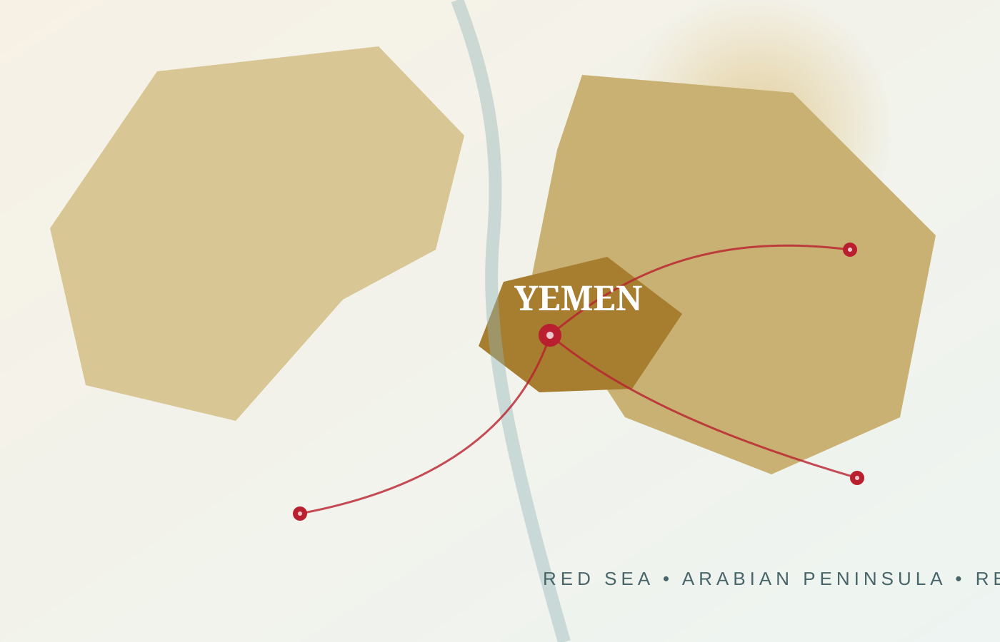
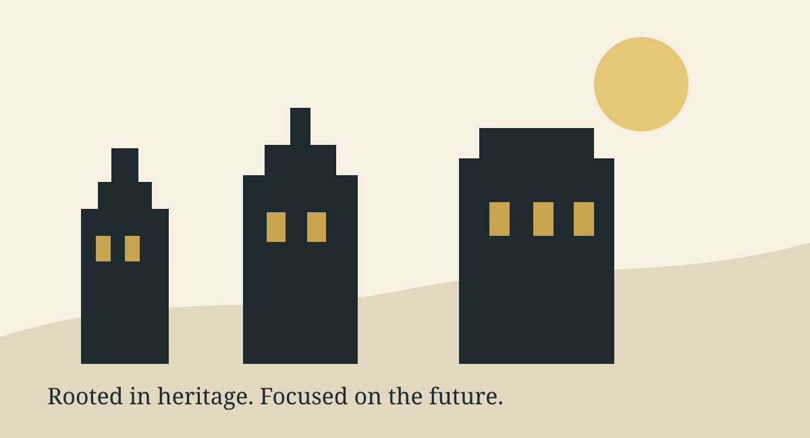
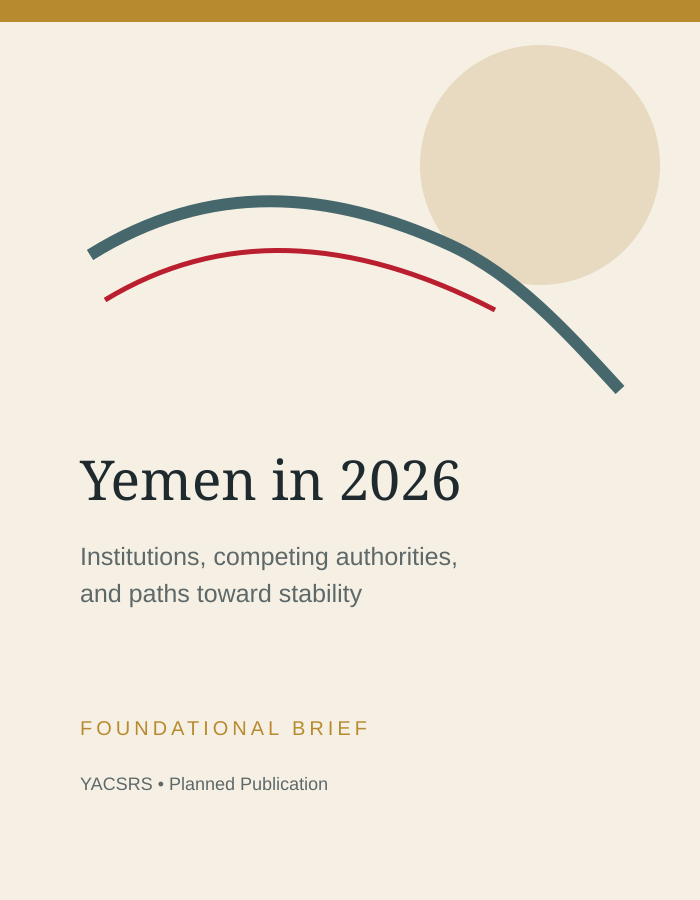
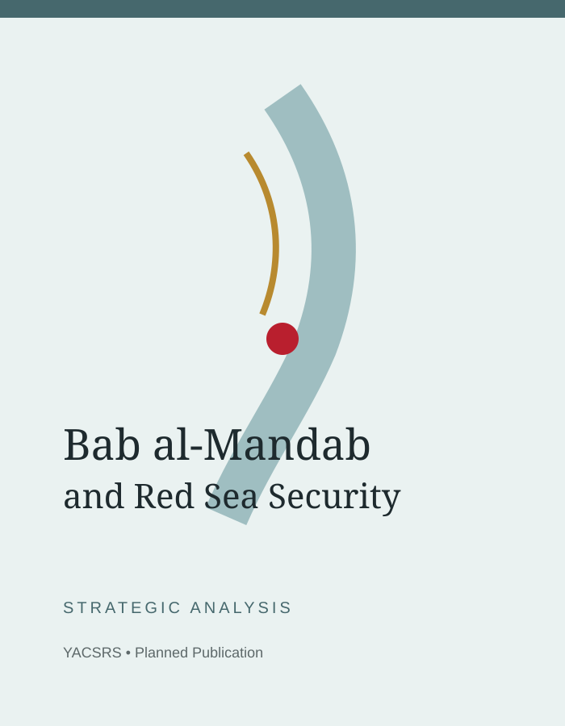
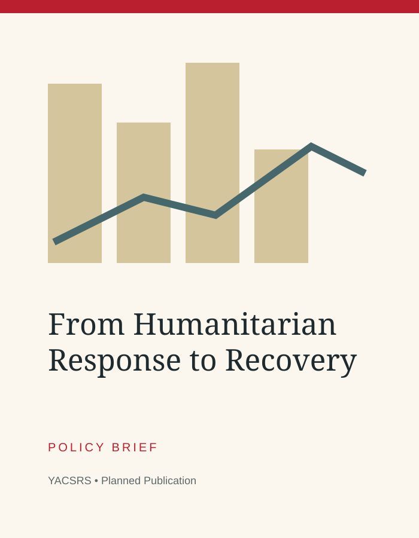
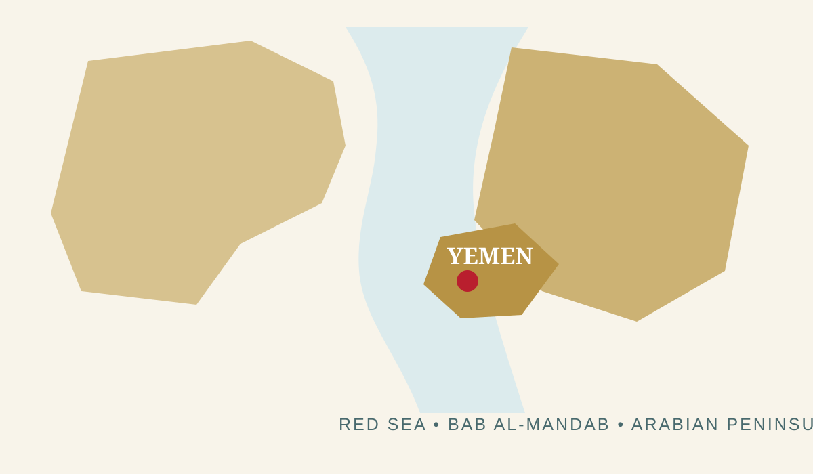

Yemen Political Affairs
Institutions, political actors, peace efforts, governance, state-building, and the evolution of Yemen’s political order.
YACSRS is a U.S.-based independent research initiative producing rigorous, accessible analysis on Yemen, regional security, governance, economic development, and the strategic environment surrounding the Red Sea and Arabian Peninsula.


The Center connects firsthand regional understanding with transparent research methods. Its purpose is to help policymakers, scholars, journalists, and the public understand Yemen through evidence rather than slogans, factional narratives, or incomplete reporting.
Independent research should clarify choices, expose uncertainty, and improve the quality of decisions.
Each program can produce policy briefs, long-form reports, interviews, visual explainers, and data-driven analysis.
Institutions, political actors, peace efforts, governance, state-building, and the evolution of Yemen’s political order.
Strategic competition, conflict dynamics, defense policy, cross-border risks, and the security architecture of the Arabian Peninsula.
Bab al-Mandab, shipping security, ports, regional trade, maritime threats, and the geopolitical importance of the Red Sea corridor.
Public institutions, infrastructure, economic recovery, energy, humanitarian transition, and practical pathways toward resilient development.
Diplomatic engagement, diaspora perspectives, aid policy, and opportunities for constructive bilateral relations.
Timelines, indicators, scenario analysis, maps, and visual explainers that turn fragmented information into usable insight.

Institutions, competing authorities, and paths toward stability.

Maritime threats, shipping, regional competition, and policy options.

Connecting emergency assistance to institutions, jobs, and development.
YACSRS is being built around transparent methods, clear sourcing, editorial independence, corrections, and a firm separation between research and advocacy.
